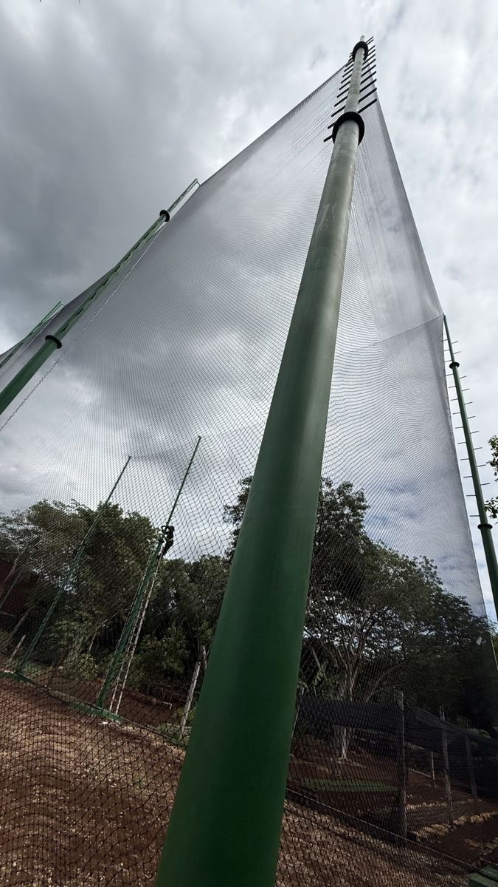
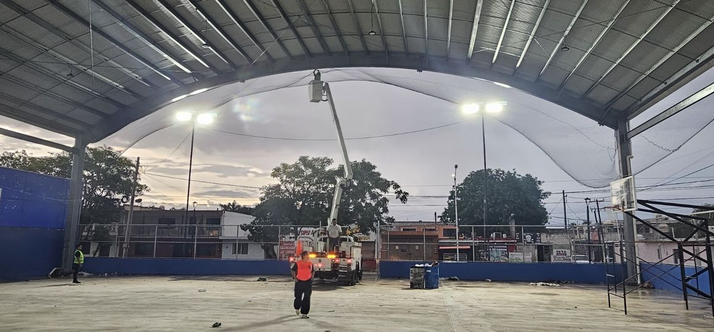
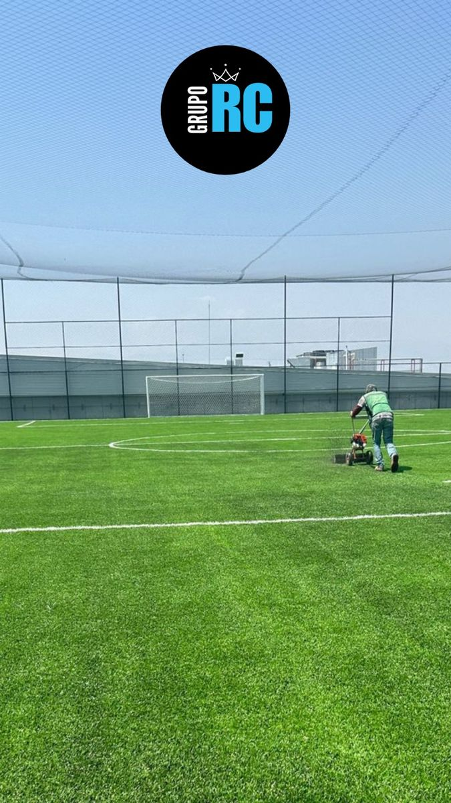

“¿Qué diferencia hay entre una red de una pulgada y una de cuatro pulgadas?” Es una pregunta que recibo con frecuencia. Muchos clientes conocen las medidas comerciales, pero no tienen claro qué representan ni cómo influyen en su proyecto.
En Redes Deportivas RC hemos suministrado redes para canchas, cerramientos de granjas, control de aves y delimitación de espacios, entre otras aplicaciones. Para elegir correctamente, siempre comienzo con una pregunta: ¿qué necesitas que no pase a través de la red?
¿Qué significan las pulgadas en una red?
En nuestras redes romboidales, la medida comercial en pulgadas corresponde a la distancia nominal entre dos nudos consecutivos, siguiendo uno de los lados del rombo. Una pulgada equivale a 2.54 centímetros:
| Medida comercial | Distancia nominal entre nudos |
|---|---|
| 1 pulgada | 2.54 cm |
| 2 pulgadas | 5.08 cm |
| 3 pulgadas | 7.62 cm |
| 4 pulgadas | 10.16 cm |
Estas medidas describen el lado de la malla. No son el diámetro de un agujero circular ni la medida de la diagonal del rombo. El cordón y los nudos también ocupan espacio; por eso revisamos la abertura libre que tendrá la red instalada.
Cuando compares proveedores, pregunta cómo miden la red. Algunos hablan del lado de la malla y otros de la malla estirada. Para comparar productos, las medidas deben expresarse con el mismo criterio.

¿Qué significa la cantidad de mallas o rombos?
Cuando describimos un paño por su cantidad de rombos, nos referimos al número de mallas que tiene a lo ancho. Este dato no describe el grosor del cordón. Para evitar confusiones, conviene separar tres conceptos:
- Medida entre nudos.
- Cantidad de rombos.
- Especificación del hilo.
El ancho final en metros depende del tamaño de esos rombos y de cómo se abra el paño. Una red romboidal cambia de forma al extenderse: cuando aumenta su dimensión en una dirección, se reduce en la otra.
Por eso pido las medidas del espacio que se quiere cubrir. No basta con conocer cuánto mide la red completamente estirada; debemos calcular cómo quedará colocada y qué abertura conservará.
Red de una pulgada: golf y pelotas pequeñas
Dentro de nuestras opciones, la red de una pulgada es la que recomiendo para golf. La abertura cerrada es un punto de partida para contener una pelota pequeña, pero también reviso la exigencia de los impactos, el cordón y las condiciones de instalación.
Una pelota reglamentaria de golf tiene un diámetro mínimo de 42.67 mm, según las reglas de equipamiento de la USGA. Este dato ayuda a entender por qué necesitamos una abertura pequeña; por sí solo no demuestra que cualquier red anunciada como “una pulgada” sea adecuada para recibir golpes de golf.
Redes para aves: empieza por identificar la especie
También utilizamos redes de una pulgada en proyectos de control de aves. Sin embargo, decir “red antipájaros” no define toda la necesidad: debemos saber qué especie queremos excluir y por dónde está entrando.
Una abertura adecuada para palomas puede permitir el paso de aves más pequeñas. Incluso una red de una pulgada debe evaluarse según la especie y el objetivo del cerramiento; no la presento como una solución universal para cualquier ave.
En estos proyectos, además de elegir la malla, hay que cerrar los encuentros con columnas, bordes y pasos de instalaciones. Una abertura sin cubrir puede dejar acceso aunque el resto de la red esté bien colocado.

Red de dos pulgadas: define el objetivo antes de ahorrar
Hemos atendido clientes que solicitan una red de dos pulgadas para reducir el presupuesto de un cerramiento para aves. Después descubren que algunas especies pequeñas pueden atravesarla.
Aquí hago una distinción importante: ¿quieres impedir el acceso de todas las aves presentes o evitar que las palomas ocupen una zona donde suelen anidar? Son necesidades diferentes y pueden requerir aberturas distintas.
En domos deportivos hemos utilizado redes de dos pulgadas para impedir el acceso de palomas. Esa experiencia no significa que la misma abertura sirva para excluir todas las especies. Mi recomendación es definir primero el resultado esperado y después comparar las opciones de presupuesto.
Redes de tres y cuatro pulgadas: balones grandes
Las redes de tres y cuatro pulgadas son opciones que evaluamos para perímetros deportivos donde se utilizan balones grandes, como fútbol o voleibol. La decisión depende del uso de la cancha, las medidas y la configuración del paño.
Si habrá varios deportes, reviso la pelota más pequeña que debe contenerse. Una abertura que funciona para un balón de fútbol no debe elegirse automáticamente para golf o para controlar el acceso de aves.

¿Qué recomiendo para sóftbol?
Algunos clientes consideran una red de dos pulgadas por presupuesto. Antes de recomendarla, prefiero revisar la pelota utilizada, la abertura efectiva y si se trata de un perímetro o una zona que recibirá impactos directos de bateo.
La medida entre nudos no debe compararse directamente con el diámetro de la pelota. Tampoco basta con medir la diagonal del rombo para concluir que podrá atravesarlo: influyen la forma completa de la abertura y la deformación de la malla bajo impacto.
Cuando la prioridad es contener impactos de bateo, busco una solución con margen suficiente y adecuada para esa exigencia. No elegiría una red únicamente porque la pelota parece no pasar al apoyarla sobre una muestra sin tensión.
Si existe duda sobre una combinación de red y pelota, conviene realizar una evaluación específica antes de instalarla, especialmente cuando hay personas o propiedades detrás de la zona de práctica.
¿Una red más cerrada es más resistente?
Al comparar redes con el mismo material, cordón y una configuración de instalación equivalente, una abertura menor normalmente implica más cordón y nudos por metro cuadrado. Eso suele aumentar el peso del paño.
Sin embargo, más material no equivale automáticamente a mayor resistencia comprobada. También influyen la calidad del hilo, los nudos, el tratamiento, la confección y los puntos de sujeción. La resistencia debe evaluarse para el producto y el uso previsto.
El peso merece atención al planear la instalación: hay que considerarlo junto con la estructura, las fijaciones y la exposición al viento. Elegir la malla y diseñar su colocación son decisiones relacionadas; lo explico en qué preparar antes de instalar una red perimetral.
La aplicación importa tanto como la abertura
Una red puede servir para delimitar un espacio, contener balones o excluir aves. Cada función tiene requisitos diferentes. En granjas, por ejemplo, debemos identificar la especie, su tamaño y si puede morder, empujar o deteriorar el material.
Antes de cotizar, reúne estos datos
- Pelota, ave u objeto que necesitas contener.
- Largo y altura de cada sección.
- Frecuencia y tipo de impactos.
- Fotografías de la estructura y de sus accesos.
- Ubicación y condiciones de exposición.
- Si necesitas suministro, instalación o ambos.
Con esta información puedo ayudarte a comparar las aberturas y recomendar una opción adaptada al proyecto. Si quieres repasar los demás criterios, consulta cómo elegir una red perimetral. En Redes Deportivas RC te asesoramos para elegir redes de una, dos, tres y cuatro pulgadas según lo que necesitas resolver: cuéntanos tu proyecto.
Referencias técnicas
- FAO: Manual de manejo para la piscicultura de agua dulce, capítulo sobre redes; distinción entre tamaño de barra y malla estirada, y variación de forma al montar el paño.
- USGA: Equipment Rules, Part 4, Rule 3 (Size); diámetro mínimo de la pelota de golf.
Las experiencias de uso y recomendaciones de RC corresponden al criterio de Reinier Coral.